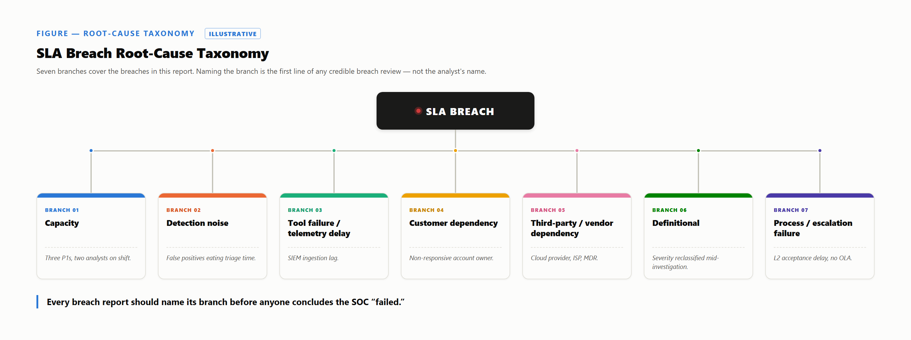

Most SLA programs discover a breach at month-end — too late to do anything but explain it. Programs that hold up flag risk early, log the time, and only then judge the failure.
Whoever works a case flags risk before the clock lapses, as a warning rather than an accusation. A team lead then decides whether shift resources can clear it, or the constraint is external — documented at the time, since reconstructed later it reads as an excuse.
Where practice calls for it, the customer is told before the deadline is the story. Each dependency gets logged as it happens; unlogged, it reads as the SOC's own delay.
The clock decides whether a breach occurred, not what it means. A missed target is classified against a root-cause taxonomy — using the dependency log and risk flag as evidence — then reviewed by the manager, who assigns an owner to corrective action. Without that, a root cause is a diagnosis with no treatment.
The taxonomy is this paper's own synthesis, generalized from Section 6's case studies — not drawn from NIST, ITIL, FIRST, or any other cited framework. Treat it as a structure to adapt, not a checklist — meant to name a mechanism, not just say "the SLA was breached."

| Branch | On the floor | Case |
|---|---|---|
| Capacity | Too many cases, too few hands. | Case 01 |
| Detection noise | An untuned rule eats real minutes. | Case 06 |
| Tool failure / telemetry delay | Latency in a pipeline, not analysts. | Case 04 |
| Customer dependency | A reply the SOC can't compel. | Case 03 |
| Third-party / vendor dependency | A vendor's own queue, not the SOC's. | Case 08 |
| Definitional | Severity shifts; the start point is disputed. | Case 05 |
| Process / escalation failure | A handoff with no owner or clock. | Case 07 |
The severity table lives in a conference room at 2 PM. The actual severity gets decided at 2:17 AM by whoever is on shift, with half the evidence in and the customer not picking up.
Run this way, breach management doesn't make breaches disappear — it makes them legible, which is the only accountability that survives a real shift.